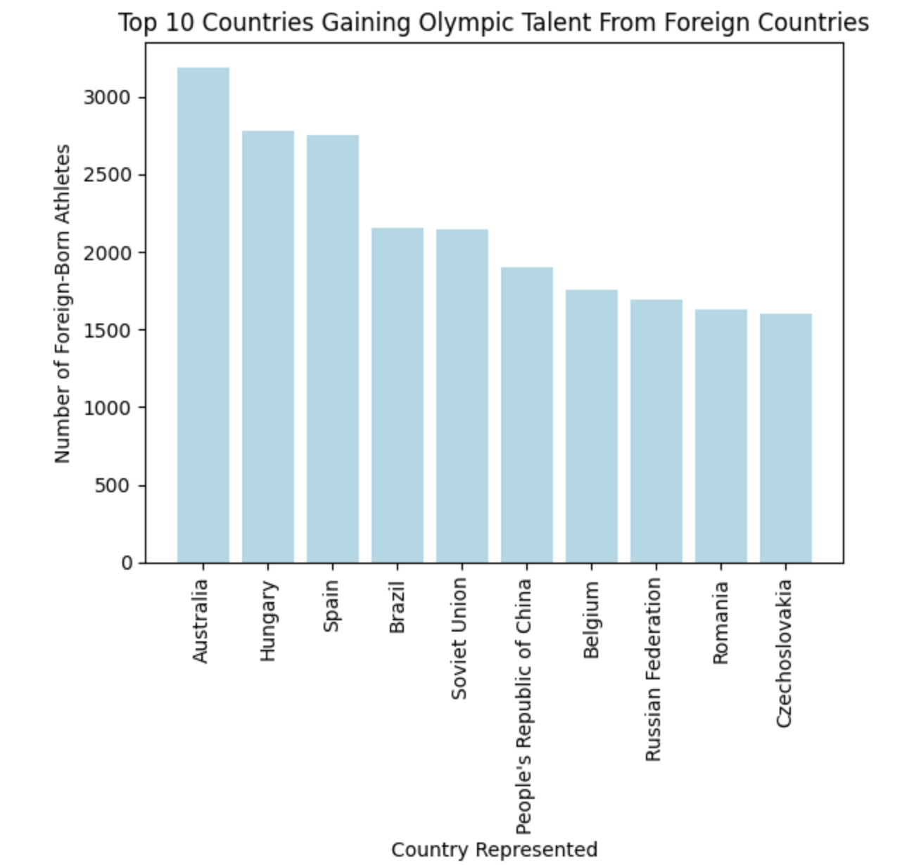
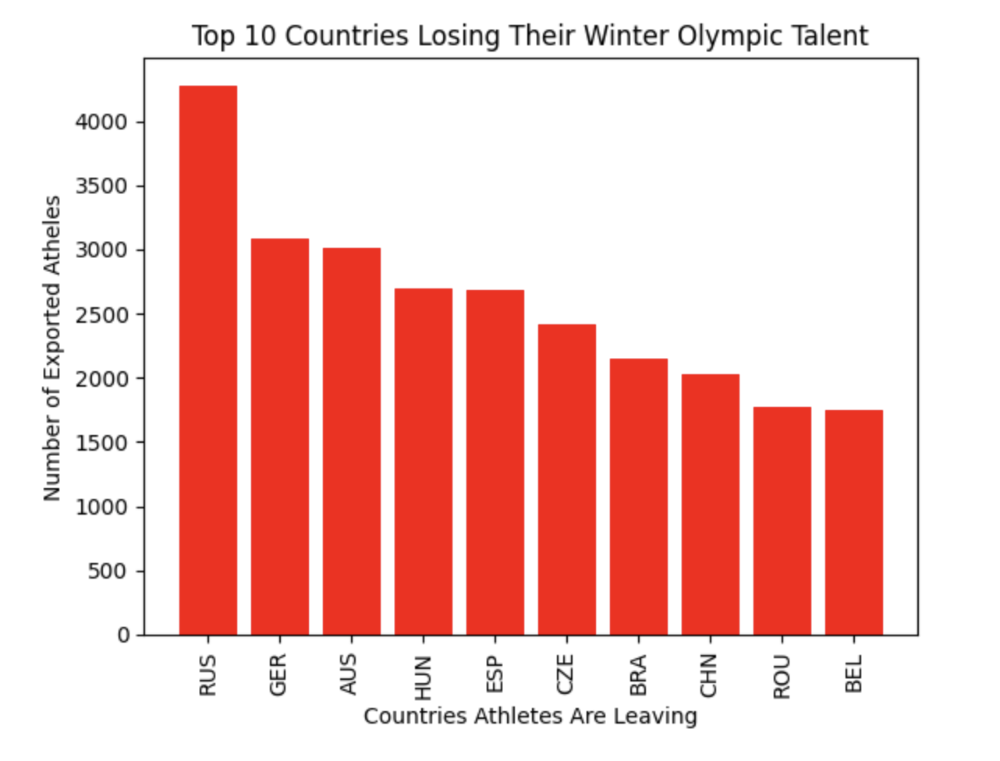

Introduction:
Every four years, the Olympics present one of the most powerful symbols of national pride in sports. It’s a common sight to see athletes walking behind their country’s flag after years of training for the chance to represent home on the world stage.
We tend to think of Olympic identity as straightforward. The country an athlete represents is the country they were born in. But as data analytics typically shows, when you dig deeper into anything, you find its alot more complicated than you think. In an increasingly globalized sports world, athletes move across borders for coaching, funding, citizenship opportunities, and competitive chances. This can lead to athletes ending up representing nations different from where they were born.
This raises an interesting question: How common is nationality switching in the Winter Olympics, and which countries benefit the most from foreign-born athletes? Using athlete bios and Olympic participation data, I explore patterns of where athletes come from, where they compete, and what this movement reveals about the global landscape of elite winter sport.
Investigation:
To see the significance to which this is occuring, I took a data set of athlete bios from almost the past 100 years to see the movement of athletes to other countries.
Jupyter Python programming was used to run this analysis.
Disclaimer!!:
Some of the athletes bios did not have information on their birth country or the country they competed for, so I dropped those athletes out of the data to make a cleanrer analysis. This most likely will change the statistics of countries slightly, but it still gives a good idea of the movement of athletes in the Winter Olympics.
In addition, because this analysis goes over data of the past 100 years, rules and regulations for competeing for a country have changed over time. This is another impact that will change the over look of the data.
General Overview:
There are a total of 110,908 athletes that had information on their birth country and reperesented country in the past 100 years.
Within that total, there are 59,606 athletes that competed for a different country from their birth country in the past 100 years.
SHOCKING Results:
54% of athletes in this data pool competed for a country that was not their birth country!
This is a very interesting finding because the Olympics has a very strong framing around national identity. This suggests that in the winter Olmypics, national identity is shaped more by access to training resources, dual citizenship, funding opportunities, and the ability to qualify through a particular country’s Olympic system. Nationality switches appear to be a common feature of elite winter sports, reflecting how globalized athlete development pathways have become in the last 100 years.
Countries GAINING Olympic Talent From Other Countries
After running some general analysis on these athletes, we can dive deeper into the data.
Which countries are most reeping the benefits from the globalization in winter sports?

This graph shows the top 10 countries that have gained the most athletes that were not originally born in that country. There are various reasons for why each country is attracting winter Olympic athletes. Reasons for this could vary from citizenship opportunities, training, coaching, or dual citizenship.
Countries LOSING Olympic Talent To Other Countries
Which countries are losing their Olympic talent because of the globalization in winter sports?
